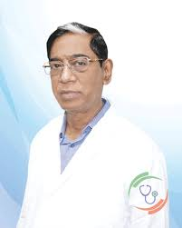
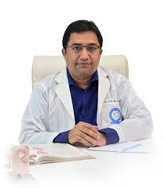

MBBS, FCPS (ENT), MS (ENT)
Special Training on Micro Ear Surgery & Endoscopic Sinus Surgery
Training on VIMS & KKR Institute, India

MBBS (DU), FCPS (ENT), FRCS (Edinburgh, UK)
PhD (Laryngology, London, UK)
ENT (Ear, Nose, Throat) Specialist & Head Neck Surgeon
Former Vice-Chancellor & Professor
Bangabandhu Sheikh Mujib Medical University (BSMMU)
Green Life Hospital, Dhaka
Address: 32, Bir Uttam Shafiullah Sarak (Green Road), Dhanmondi, Dhaka
Visisting Hours: 8am to 11am (Sat, Sun, Mon & Wed)
Appointment: +8801966010138
অধ্যাপক ডাঃ প্রাণ গোপাল দত্ত ঢাকার গ্রীন রোডে অবস্থিত গ্রীন লাইফ হাসপাতালে নিয়মিত বসেন বা চেম্বার করেন। গ্রীন লাইফ হাসপাতালের ঠিকানাঃ ৩২, বীর উত্তম শফিউল্লাহ সড়ক (গ্রিন রোড), ধানমন্ডি। দেখার সময়: সকাল ৮টা থেকে ১১টা এবং বিকেল ৪টা থেকে রাত ৮টা (শনি, রবি, সোম ও বুধ)। এপয়েন্টমেন্ট নিতে সকাল ৮.৩০ থেকে বিকাল ৬ টার মধ্যে উপরে দেয়া নাম্বারে কল দিন।
Prof. Pran Gopal Datta, Former Vice-Chancellor and Professor, Bangabandhu Sheikh Mujib Medical University, Dhaka. He completed his MBBS degree from Chittagong Medical College in 1976. In 1981 he completed MS (Otolaryngology) from Odessa State Medical Institute, Russia (the then USSR). In 1983 he obtained his PhD from Kiev Scientific and Research Institute, Russia (the then USSR) and MSc (Audiological Medicine) from Manchester University, UK.
He has done specialized training in Microsurgery of ENT from Tuebingen University, HNO KLINK, German and Audiological Medicine from Great Britain.
Dr. Pran Gopal Datta join at Chittagong Medical College Hospital in 1977. After that, he served as Registrar, Assistant Professor, Associate Professor and Professor in various medical colleges. He served as Professor, Chairman, and Treasurer in ENT Department of Bangabandhu Sheikh Mujib Medical University from 1999 to 2009. He was Vice-Chancellor of Bangabandhu Sheikh Mujib Medical University for two consecutive years from 2009 to 2015.
Dr. Pran Gopal Datta was awarded the country’s highest civilian award “Shadinata Padak” in 2012, for his glorious contribution to medical science. He was also awarded the “Leading Health Professionals of the World Award”, “BMA Padak”, “Bangladesh Sishu Bandhu Padok” in 2011 for outstanding contribution to medical science. He also received many other awards for his contribution to medical science.
MBBS, FCPS (ENT), MS (ENT)
Special Training on Micro Ear Surgery & Endoscopic Sinus Surgery
Training on VIMS & KKR Institute, India
ENT (Ear, Nose, Throat) Specialist & Head Neck Surgeon
Associate Professor, ENT & Head Neck Surgery
Sir Salimullah Medical College & Mitford Hospital
Bangladesh ENT Hospital Ltd
Address: Navana Newbury Place (3rd Floor), 4/1/A Sobahanbag, Mirpur Road, Dhaka
Visisting Hours: 3pm to 5pm (Closed: Friday)
Appointment: +8801717250667
Ibn Sina Diagnostic Center, Dhanmondi
Address: House # 48, Road # 9/A, Dhanmondi, Dhaka – 1209
Visisting Hours: 4:30pm to 6:30pm (Closed: Friday)
Appointment: +8809610010615
Asso. Prof. Dr. Md. Sahbub Alam is a highly experienced ENT (Ear, Nose, and Throat) specialist and Head Neck Surgeon in Dhaka, holding MBBS, FCPS (ENT), and MS (ENT) degrees, with advanced training in Micro Ear Surgery and Endoscopic Sinus Surgery from VIMS and KKR Institute, India. He serves as an Associate Professor in the Department of ENT & Head Neck Surgery at Sir Salimullah Medical College & Mitford Hospital. Dr. Md. Sahbub Alam specializes in treating a range of ENT conditions including sinusitis, tonsillitis, nasal polyps, hearing loss, ear infections, deviated nasal septum, throat cancer, and head and neck tumors. He provides patient consultations at Bangladesh ENT Hospital Ltd, Navana Newbury Place, Sobahanbag, Mirpur Road, Dhaka, from 3:00 pm to 5:00 pm (closed on Fridays), and at Ibn Sina Diagnostic Center, House #48, Road #9/A, Dhanmondi, Dhaka, from 4:30 pm to 6:30 pm (closed on Fridays).

MBBS (DMC), BCS (Health), FCPS (ENT)
Advanced Clinical Fellowship in Otology (BSMMU)
Special Training on Micro Ear & Endoscopic Sinus Surgery, Training on VIMS & KKR Institute, India
ENT (Ear, Nose, Throat) Specialist & Head Neck Surgeon
Associate Professor, ENT
Dhaka Medical College & Hospital (Ex)
Consultant, ENT
Bangladesh ENT Hospital Limited
Bangladesh ENT Hospital Ltd
Address: Navana Newbury Place (3rd Floor), 4/1/A Sobahanbag, Mirpur Road, Dhaka
Visisting Hours: Sat, Mon & Wed (7pm to 10pm), Tuesday (2.30pm to 3.30pm )
Appointment: +8809666710710
Authentic Diagnostic & Consultation Center
Address: House # 71/4, Hoseni Dalan Road, Chankharpul, Dhaka
Visisting Hours: 42.30pm to 4pm (Saturday & Wednesday)
Appointment: +8801841715269
Dr. Md. Abdullah Al Harun is a highly experienced ENT (Ear, Nose, Throat) Specialist & Head Neck Surgeon, known for his expertise in treating conditions such as chronic sinusitis, nasal polyps, hearing loss, tinnitus, vertigo, tonsillitis, throat infections, and head & neck tumors. He holds an MBBS from Dhaka Medical College (DMC), is a BCS (Health) cadre, and has achieved FCPS (ENT) certification. Additionally, he has completed an Advanced Clinical Fellowship in Otology from BSMMU and specialized training in Micro Ear Surgery and Endoscopic Sinus Surgery from VIMS & KKR Institute, India. Formerly an Associate Professor of ENT at Dhaka Medical College & Hospital, Dr. Abdullah Al Harun currently serves as a Consultant at Bangladesh ENT Hospital Limited, providing advanced treatment for ear infections, sinus diseases, voice disorders, and other ENT-related ailments.
He is available for consultations at Bangladesh ENT Hospital Ltd, Navana Newbury Place (4th Floor), 4/1/A Sobahanbag, Mirpur Road, Dhaka, on Saturday, Monday, and Wednesday from 7:00 PM to 10:00 PM, and Tuesday from 2:30 PM to 3:30 PM. He also consults at Authentic Diagnostic & Consultation Center, House # 71/4, Hoseni Dalan Road, Chankharpul, Dhaka, on Saturday and Wednesday from 2:30 PM to 4:00 PM. For expert treatment of ear, nose, throat, and head-neck conditions, book an appointment with Dr. Md. Abdullah Al Harun today!